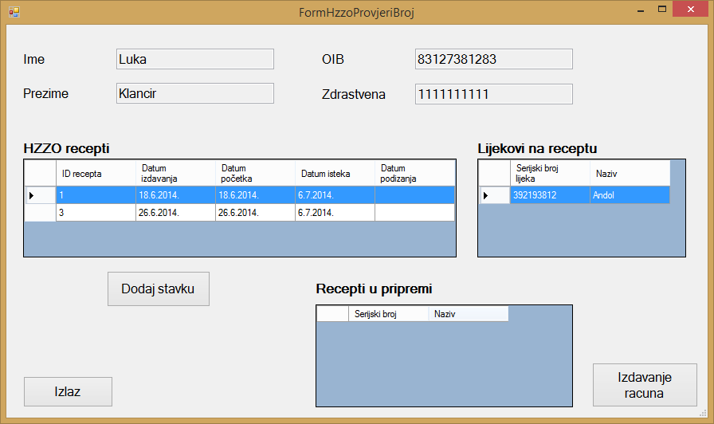

Nakon što se korisnik uspješno logira u aplikaciju, otvara se početni zaslon uz pomoć kojeg je moguće provjeriti podatke o klijentu koji ima zdravstveno osiguranje, ali je također iz početnog zaslona moguće pristupiti bilo kojem dijelu aplikacije ovisno o tome što je korisniku aplikacije u određenom trenutku potrebno uz pomoć menija koji se nalazi u gornjem dijelu prozora.
Na početnom zaslonu se nalazi polje "Zdravstvena iskaznica" u koje se unosi jedinstveni broj zdravstvene iskaznice klijenta.

U ovom primjeru kao podatak za jedinstveni broj zdravstvene iskaznice koristit ćemo broj: "1111111111".
Nakon što je korisnik aplikacije unjeo podatak o jedinstvenom broju zdravstvene iskaznice, klikom na gumb "Provjeri" iz baze podataka Hrvatskog zavoda za zdravstveno osiguranje dohvaćaju se relevantni podaci o klijentu kako bi mu se mogli izdati lijekovi koje mu je prepisao liječnik.

Nakon što su podaci o klijentu dohvaćeni iz baze podataka HZZO-a, u prozoru koji se pojavljuje nakon što korisnik klikne na gumb "Provjeri" pojavljuju se podaci osnovni podaci o klijentu. U tablici "HZZO recepti" moguće je vidjeti sve recepte koje je liječnik prepisao klijentu. Odabirom jednog od mogućih recepata, u tablici "Lijekovi na receptu" pojavljuju se svi lijekovi koji se nalaze na određenom receptu.

Iz tablice "Lijekovi na receptu" moguće je odabrati jedan od ponuđenih lijekova te ga klikom na gumb "Dodaj stavku" dodati u tablicu "Recepti u pripremi".

Nakon što je korisnik aplikacije odabrao sve lijekove koji su potrebni klijentu, klikom na gumb "Izdavanje racuna" otvara se prozor u kojemu korisnik aplikacije upisuje podatke koji su potrebni za izdavanje računa klijentu. Više o postupku izdavanja računa nalazi se u temi "Dodavanje, provjera i brisanje racuna".